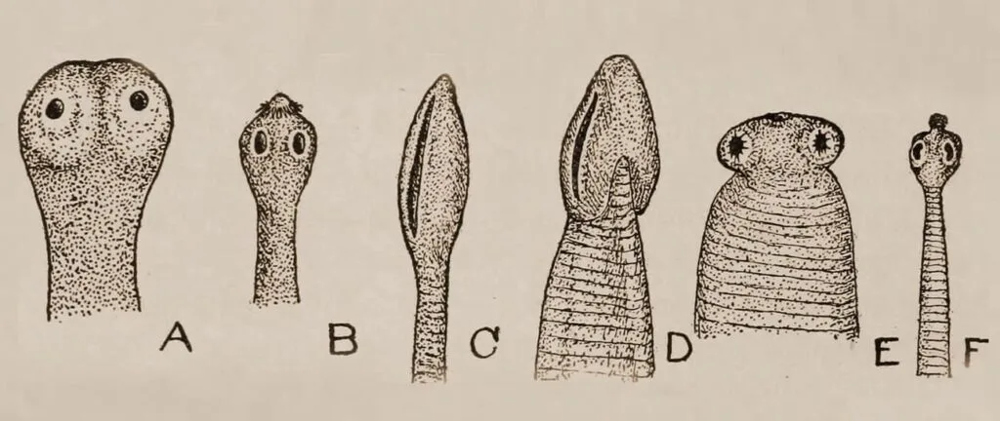

Expanded Nursing Uganda Explanation
Helminthic diseases (Intestinal worms) should be studied as a medication-safety topic: indication, dose, route, timing, contraindications, expected effects, adverse effects, documentation and patient teaching all matter.
01 Helminthiasis/Worm Infestation
Helminthiasis , commonly known as worm infestation , refers to a group of infections caused by parasitic worms living within the human body .
These infections are widespread, particularly in tropical and subtropical regions, affecting millions of people globally.
Helminthiasis :
Helminthiasis encompasses infections caused by parasitic worms belonging to three major groups :
1. Nematodes (roundworms): These are cylindrical, unsegmented worms with a pointed tail. Examples include
- Ascaris lumbricoides, hookworms (Ancylostoma caninum and Necator americanus), and Trichuris trichiura.
2. Cestodes (tapeworms) : These are flat, ribbon-like worms with segments (proglottids).
- Taenia saginata, Taenia solium, and Diphyllobothrium latum are some commonly encountered species.
3. Trematodes (flukes): These are flat, leaf-like worms with a complex life cycle involving multiple hosts.
- Schistosoma species (blood flukes), Fasciola hepatica (liver fluke), and Clonorchis sinensis (Chinese liver fluke) are examples.
02 Lifecycles of Helminthiasis
Helminthic infections occur when a host ingests or comes into contact with infectious stages of the parasite. The specific mode of transmission varies depending on the type of worm:
03 Transmission Routes & Lifecycle:
1. Fecal-Oral Route :
Nematodes like Ascaris lumbricoides, hookworms, and Trichuris trichiura : Human feces containing parasite eggs are released into the environment. These eggs mature and become infective. Humans become infected by ingesting contaminated soil, water, or food containing these eggs.
Lifecycle Example : Ascaris lumbricoides
- Eggs : Ingested eggs hatch in the small intestine, releasing larvae.
- Larvae : Larvae penetrate the intestinal wall, enter the bloodstream, and migrate to the lungs.
- Adult Worms : Larvae mature in the lungs, migrate up the respiratory tract, are swallowed, and reach the small intestine where they mature into adults. Adult worms produce eggs that are passed in feces.
2. Skin Penetration :
Hookworms (Ancylostoma caninum and Necator americanus) : Infective larvae present in contaminated soil penetrate the skin, usually through the feet.
Lifecycle Example : Hookworms
- Larvae : Infective larvae in soil penetrate the skin.
- Bloodstream Migration : Larvae travel through the bloodstream to the lungs, migrate up the respiratory tract, are swallowed, and reach the small intestine.
- Adult Worms : Larvae mature into adults in the small intestine, where they attach to the intestinal wall and feed on blood. Eggs are produced and passed in feces.
3. Consumption of Undercooked Meat :
Cestodes like Taenia saginata and Taenia solium : Humans become infected by consuming undercooked meat containing the parasite’s larval stage (cysticercus).
Lifecycle Example : Taenia saginata (beef tapeworm)
- Ingestion of Cysticercus : Humans ingest undercooked beef containing cysticerci.
- Adult Worm : Cysticerci mature into adult tapeworms in the small intestine.
- Eggs : Eggs are released from the adult worm and passed in feces, contaminating the environment.
4. Consumption of Raw or Undercooked Fish :
Cestodes like Diphyllobothrium latum : Humans become infected by consuming raw or undercooked fish containing the parasite’s larval stage (plerocercoid).
Lifecycle Example : Diphyllobothrium latum (broad fish tapeworm)
- Ingestion of Plerocercoid : Humans ingest raw or undercooked fish containing plerocercoid larvae.
- Adult Worm : Larvae mature into adult tapeworms in the small intestine.
- Eggs : Eggs are released from the adult worm and passed in feces, contaminating the environment.
04 Clinical Features:
The symptoms of helminthiasis vary depending on the type of worm and the intensity of infection. Common features include:
Gastrointestinal Symptoms :
- Abdominal pain and cramping
- Diarrhea or constipation
- Nausea and vomiting
- Anorexia (loss of appetite)
- Weight loss
Other Symptoms :
- Fatigue and weakness
- Anemia (caused by blood loss due to hookworms)
- Edema (swelling)
- Coughing (associated with larval migration in the lungs)
- Rectal prolapse (particularly in cases of heavy Trichuris trichiura infection)
- Skin manifestations (rash, itching)
- Neurologic symptoms (in cases of neurocysticercosis)
05 Diagnosis & Investigations:
- History and Physical Examination : Detailed information regarding symptoms, travel history, and potential exposure to contaminated environments is crucial.
- Stool Examination : This is the primary diagnostic tool for most intestinal helminth infections. Microscopic examination of stool samples can reveal parasite eggs or larvae.
- Blood Tests : Blood tests can help detect the presence of antibodies against specific parasitic worms (e.g., schistosomiasis).
- Imaging Studies : Imaging techniques like X-rays, ultrasound, and MRI can be used to detect larval cysts or adult worms in certain tissues (e.g., cysticercosis).
06 Prevention :
Sanitation and Hygiene :
- Proper disposal of human feces through toilets or latrines.
- Washing hands thoroughly with soap and water after using the toilet and before preparing food.
- Wearing shoes when walking on contaminated soil.
Safe Food Practices :
- Washing fruits and vegetables thoroughly before consumption.
- Cooking meat thoroughly to kill any parasitic larvae.
- Avoiding raw or undercooked fish.
Control of Human Waste :
- Proper disposal of human waste, including sewage treatment.
- Education and Awareness: Public education about the risks of helminthiasis, its transmission, and prevention measures is crucial.
07 Management :
Aims :
- Elimination of Parasites : The primary aim is to eliminate the parasitic worms from the body.
- Symptomatic Relief : Addressing the symptoms associated with the infection is vital for patient comfort.
- Prevention of Complications : Measures are taken to prevent further complications related to the infection.
Management :
- S upportive Care : Rest, hydration, and proper nutrition are important components of initial management.
- Anti-Emetic Medications: These can be used to alleviate nausea and vomiting.
- Anti-Diarrheal Medications : These may be necessary to control diarrhea.
- Pain Relief : Pain medications can be prescribed for abdominal pain.
- Iron Supplementation : In cases of anemia caused by hookworm infection, iron supplementation is needed.
- Anti-Helminthic Medication : Anti-helminthic medications are used to kill or expel the parasitic worms. The specific medication depends on the type of worm causing the infection.
- Repeat Dosing : Depending on the type of worm and the intensity of infection, repeat doses of anti-helminthic medications may be necessary.
Medical Management:
Drug Therapy: Anti-helminthic medications are the mainstay of treatment for helminthiasis.
Commonly used drugs:
- Mebendazole : Effective against roundworms (Ascaris lumbricoides, hookworms, Trichuris trichiura) and some tapeworms.
- Albendazole : Broad-spectrum anti-helminthic agent effective against a wide range of roundworms, tapeworms, and some flukes.
- Praziquantel : Effective against tapeworms and flukes (e.g., schistosomiasis).
- Ivermectin : Effective against roundworms (e.g., Onchocerca volvulus, Strongyloides stercoralis) and some other parasites.
Supportive Care :
- Iron Supplementation : In cases of anemia caused by hookworm infection, iron supplementation is needed.
- Nutritional Support: Patients with significant weight loss may require nutritional support.
- Fluid Management : Maintaining adequate hydration is usefu, especially for patients with diarrhea.
- Infestation Type Drug Dosage
- Roundworm, Threadworm, Hookworm, Whipworm Albendazole 400 mg single dose (200 mg for children under 2 years)
- Mebendazole 500 mg single dose (250 mg for children under 2 years)
- Ivermectin 150 micrograms/kg single dose
Prevention
- Practice proper faecal disposal.
- Maintain personal and food hygiene.
- Regular deworming for children every 3-6 months.
- Avoid walking barefoot to prevent skin penetration by larvae.
08 Complications :
- Intestinal Obstruction: Large numbers of adult worms (especially Ascaris lumbricoides) can obstruct the intestines, leading to severe abdominal pain, vomiting, and difficulty passing stool.
- Malnutrition : Chronic helminthic infections can contribute to malnutrition by interfering with nutrient absorption and causing blood loss (e.g., hookworms).
- Anemia : Hookworms can cause anemia by feeding on blood in the intestines.
- Rectal Prolapse : Heavy infestations with Trichuris trichiura can lead to rectal prolapse.
- Cysticercosis : Ingestion of Taenia solium eggs can lead to cysticercosis, where larval cysts develop in various tissues, including the brain.
- Neurocysticercosis : Cysticercosis in the brain can cause seizures, headaches, and other neurological problems.
- Schistosomiasis – related Complications : Schistosoma infection can cause liver damage, urinary tract problems, and other complications.
- Filariasis : Filariasis, caused by parasitic worms that reside in the lymphatic system, can lead to lymphedema, elephantiasis, and other problems.
09 Nursing Uganda Clinical Lens
Use Helminthic diseases (Intestinal worms) as a practical nursing topic, not only a memorized definition. Study medicines through indication, safety checks, expected response, adverse effects and patient teaching.
- What to understand first: define helminthic diseases (intestinal worms), identify the normal or expected pattern, then explain what changes when the patient is unwell.
- Why it matters in care: the nurse must recognize risk early, explain findings clearly, document accurately and know when to escalate.
- How to revise it: connect each point to assessment, nursing diagnosis or care problem, intervention, rationale and evaluation.
10 Assessment Guide
- Diagnosis or reason for the medicine, allergies, pregnancy status and previous reactions.
- Current medicines, herbal products, renal or liver risk and baseline observations.
- Dose, route, timing, dilution, expiry date and documentation requirements.
11 Nursing Priorities, Rationales and Outcomes
- Apply the rights of medication administration and facility policy.
- Monitor therapeutic response and class-specific adverse effects.
- Educate the patient on purpose, timing, missed doses, warning symptoms and adherence.
The rationale for these priorities is patient safety: nursing actions should prevent deterioration, reduce discomfort, support recovery and create clear evidence for the next caregiver.
- Expected outcome: The medicine produces the intended effect without preventable harm, and administration is accurately documented.
12 Patient Teaching and Revision Check
- Explain helminthic diseases (intestinal worms) in simple language the patient or caregiver can repeat back.
- Teach warning signs, medicine or follow-up instructions, hygiene or lifestyle points where relevant.
- For exams, prepare a short answer using: definition, causes or risk factors, signs, assessment, management, complications and prevention.
- For ward practice, document baseline findings, actions taken, patient response and the plan for review.
Illustrations and Diagrams (1)

Related Video Lectures
Watch nursing lecture videos on YouTube for this topic. Opens in a new tab.
Watch on YouTubeExternal link: YouTube may use its own cookies and terms. Nursing Uganda is not affiliated with YouTube.